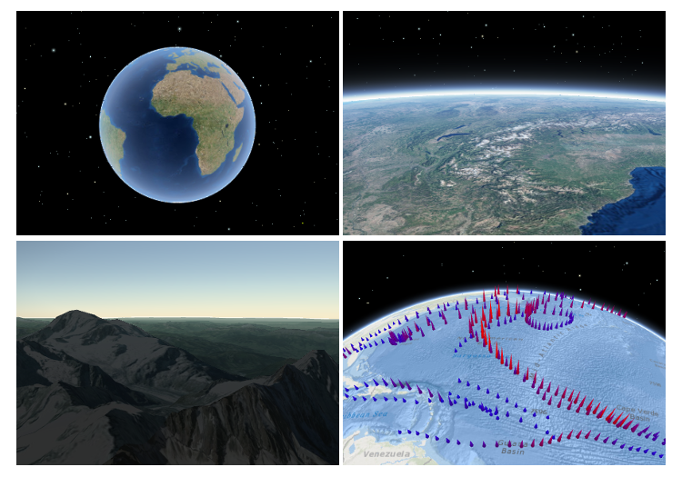
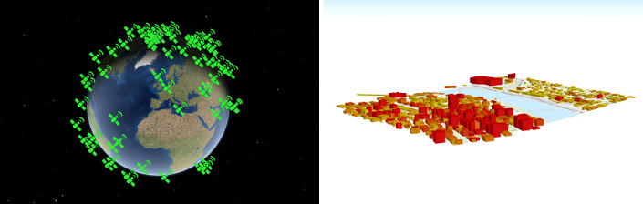
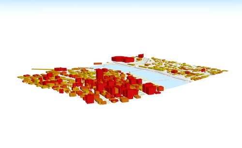
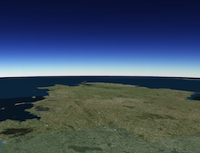
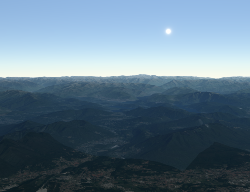
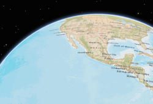
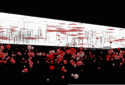

- Overview
- Using the view
- SceneView navigation
- Programmatic navigation
- Viewing modes
- Supported Coordinate Systems
- Using elevation data
Overview
A SceneView displays a 3D view of a Map or WebScene instance using WebGL. To render a map and its layers in 2D, see the documentation for MapView. For a general overview of views, see View.

For a map to be visible to the user in the DOM, a SceneView must have both a valid Map instance and a DOM element with a non-zero height and width in which to render. Note that there must be valid data in the map, such as operational layers or a basemap with base layers, before the view will begin rendering the map.
// Create a basic SceneView instance with a basemap and world elevation
var view = new SceneView({
// An instance of Map or WebScene
map: new Map({
basemap: "hybrid"
}),
// The id of a DOM element (may also be an actual DOM element)
container: "viewDiv"
});
Using the view
A SceneView may not be immediately ready for display after it has been constructed. For example, map data may need to be loaded first to determine the spatialReference of the view, or the DOM container may not yet have a non-zero size. Many of the view methods (such as hitTest or goTo) need the view to be ready before they can be used. SceneView is a Promise which resolves as soon as the view is ready for display and interaction. The view will reject when it is impossible to display because of technical limitations of the client (for example if WebGL is not available).
// create a SceneView instance (for 3D viewing)
var view = new SceneView({
map: new Map({
basemap: "topo"
}),
container: "viewDiv"
});
view
.then(function() {
// SceneView is now ready for display and can be used. Here we will
// use goTo to view a particular location at a given zoom level, camera
// heading and tilt.
view.goTo({
center: [-112, 38],
zoom: 13,
heading: 30,
tilt: 60
})
})
.otherwise(function(err) {
// A rejected view indicates a fatal error making it unable to display,
// this usually means that WebGL is not available, or too old.
console.error("SceneView rejected:", err);
});
To learn more about Promises, see this article in the Guide. For live examples of view.then(), see the 2D overview map in SceneView and Toggle elevation layer samples.
SceneView navigation
The view can be navigated programmatically via goTo() and the view properties or interactively with touch events. The default SceneView navigation includes the keyboard and mouse interactions as described in the table below.
| Action | SceneView behavior |
|---|---|
| Drag | Pan |
| Double-click | Zoom in at the cursor |
| Scroll forward | Zoom in at the cursor |
| Scroll backward | Zoom out at the center of the view |
| Right-click+Drag | 3D-rotate around the center of the view |
| Arrow Keys | Nudge the view left, right, up, or down |
| B + Left-click+Drag | 3D-rotate around the camera's position |
| P | Move the camera to look perpendicular to the data displayed in the view |
| N | Adjust the SceneView to point north |
| J | Move down, closer to the view |
| U | Move up, higher from the view |
Programmatic navigation
Traditional 2D mapping properties, such as scale, zoom, center and extent do not always work well in 3D. For example, a map's scale is not clear when viewed in the context of a globe. The SceneView therefore supports these properties on a best effort basis, with certain limitations (see the documentation of individual properties for more information).
// Compatibility with 2D viewing properties, such as center and zoom, allows
// convenient transitioning from the familiar use of the 2D MapView to the
// use of the SceneView for 3D viewing.
var view = new SceneView({
map: new Map({
basemap: "satellite"
}),
container: "viewDiv",
// Sets the center point of the view at a specified lon/lat
center: [-112, 38],
// Sets the zoom LOD to 13
zoom: 13
});
The nature of 3D viewing includes oblique views, z-values, and rotation, all of which add complexity to defining what is visible in the view. In contrast to 2D MapView, which are primarly defined by an extent, or center and scale, the primary view specification of the SceneView is a Camera instance. The camera is defined by a 3D position, heading and tilt. See the documentation of Camera for more details.
Because some view properties overlap (e.g. center and camera), there is a set priority in which these properties are applied during construction of the view (until the view becomes ready). The following table describes which properties have priority during view construction (properties that are overridden will have no effect during construction).
| Property | Overrides |
|---|---|
| camera | viewpoint, extent, center, scale, zoom |
| viewpoint | extent, center, scale, zoom |
| extent | center, scale, zoom |
| scale | zoom |
It can be difficult to define the camera for viewing data at a particular location. The goTo method provides a convenient way to set the view's camera based on data (geometries, graphics) you want to view and from any perspective using heading, tilt, scale or zoom. Additionally, goTo will provide a smooth transition to the new location of the view by default.
// go to a location specified in geographic coordinates,
// from a 45 degree angle.
view.goTo({
center: [-112, 38],
heading: 45
});
// go to view all the graphics in view.graphics, while northing the
// the camera and tilting it to 60 degrees
view.goTo({
target: view.graphics,
heading: 0,
tilt: 60
});
// Set the view to show an extent at a -20 degree heading, disabling the
// animated transition
view.goTo({
target: new Extent(694942, 5596444, 1284090, 6163926, SpatialReference.WebMercator),
heading: -20
}, {
animate: false
});
Viewing modes

The SceneView supports two different viewing modes, global (left picture above) and local (right picture above), specified by the viewingMode property. Global scenes render the earth as a globe, while local scenes render the surface on a flat plane. Local mode allows for navigation and feature display in a localized or clipped area. Users may also navigate the camera of a local scene below the displayed surface.
The viewing mode (if not explicitly set by the user) is determined based on the spatial reference of the view. If the spatial reference is either Web Mercator or WGS84, then the viewingMode will default to global. For any other spatial reference the viewingMode will default to local.
Supported coordinate systems
The SceneView supports following coordinate systems in a global scene:
- WGS84 or WebMercator
- Noncached layers with any spatial reference since they will be reprojected to the scene spatial reference
In a local scene the following coordinate systems are supported:
- Any Projected Coordinate System
- Noncached layers with any spatial reference since they will be reprojected to the scene spatial reference
Using elevation data
The SceneView will use elevation layers from the Map.ground as sources for elevation when rendering the ground surface. Similar to the basemap, the ground can be initialized with a well-known name, which creates it with a known set of elevation layers.
var view = new SceneView({
map: new Map({
basemap: "satellite",
// A ground preset containing a single elevation layer, sourced from
// https://elevation3d.arcgis.com/arcgis/rest/services/WorldElevation3D/Terrain3D/ImageServer
ground: "world-elevation"
},
container: "viewDiv"
});
Local elevation layers can be added to the ground.layers to merge multiple elevation sources into a single surface. See 3D Map With Elevation Services for an example.
Known Limitations
The number of features that can be rendered in a SceneView varies depending on the complexity of each feature's geometry and symbol.
Generally you should limit the number of features in a SceneView to no more than 2,000. Rendering more than 2,000 point geometries with simple symbols is feasible, but as feature geometries and symbols get more complex, you should expect to limit the number of features in the view to fewer than 2,000.
Constructors
new SceneView(properties)
| Name | Type | Description |
|---|---|---|
properties | Object | optional See the properties for a list of all the properties that may be passed into the constructor. |
Example
// Typical usage
var view = new SceneView({
// ID of DOM element containing the view
container: "viewDiv",
// Map/WebScene object
map: new Map()
});Property Overview
| Name | Type | Summary | |
|---|---|---|---|
| Collection | Collection containing a flat list of all the created LayerViews related to the basemap, operational layers, and group layers in this view. more details | more details | |
| ViewAnimation | Represents an ongoing view animation initialized by goTo(). more details | more details | |
| Object | A convenience property used for defining the breakpoints on the height and width of the view. more details | more details | |
| Camera | The observation point from which the visible portion (or perspective) of the SceneView is determined. more details | more details | |
| Point | Represents the view's center point. more details | more details | |
| Extent | Represents an optional clipping area used to define the visible extent of a local scene. more details | more details | |
| Accessor | Specifies constraints for Camera tilt and altitude that may be applied to the SceneView. more details | more details | |
| String | The | more details | |
| String | The name of the class. more details | more details | |
| Accessor | Specifies various properties of the environment's visualization in the view. more details | more details | |
| Extent | The extent represents the visible portion of a map within the view as an instance of Extent. more details | more details | |
| Collection | Allows for adding graphics directly to the default graphics in the View. more details | more details | |
| Number | The height of the view in pixels read from the view container element. more details | more details | |
| String | A convenience property indicating the general size of the view's height. more details | more details | |
| Boolean | Indication whether the view is being interacted with (for example when panning). more details | more details | |
| Collection | A collection containing a hierarchical list of all the created LayerViews of the operational layers in the map. more details | more details | |
| Map | An instance of a Map or WebScene object to display in the view. more details | more details | |
| String | A convenience property indicating the view's orientation. more details | more details | |
| Object | Use the padding property to make view.center, view.extent, etc. more details | more details | |
| Popup | A Popup object that displays general content or attributes from layers in the map. more details | more details | |
| String | SceneView can draw scenes in two different quality modes: | more details | |
| Boolean | When | more details | |
| Boolean | Indicates if the view is being resized. more details | more details | |
| Number | Represents an approximation of the map scale at the center of the view. more details | more details | |
| Number[] | An array containing the width and height of the view in pixels, e.g. more details | more details | |
| SpatialReference | The spatial reference of the view. more details | more details | |
| Boolean | Indication whether the view is animating, being interacted with or resizing. more details | more details | |
| Boolean | Indicates if the view is visible on the page. more details | more details | |
| String | The type of the view (for SceneView, this value is always | more details | |
| DefaultUI | Exposes the default widgets available in the view and allows you to toggle them on and off. more details | more details | |
| Boolean | Indicates whether the view is being updated by additional data requests to the network, or by processing received data. more details | more details | |
| String | The viewing mode ( | more details | |
| Viewpoint | Represents the current view as a Viewpoint or point of observation on the view. more details | more details | |
| Number | The width of the view in pixels read from the view container element. more details | more details | |
| String | A convenience property indicating the general size of the view's width. more details | more details | |
| Number | Represents the level of detail (LOD) at the center of the view. more details | more details | |
Property Details
allLayerViewsCollection
Collection containing a flat list of all the created LayerViews related to the basemap, operational layers, and group layers in this view.
- See also:
animationViewAnimation autocast
Represents an ongoing view animation initialized by goTo(). You may watch this property to be notified of animation state changes.
- See also:
Example
view.watch("animation.state", function(state) { switch (state) { case "running": console.log("Animation is running"); break; case "finished": console.log("Animation has finished"); break; case "stopped": console.log("Animation was stopped by the user"); break; } });breakpointsObject
A convenience property used for defining the breakpoints on the height and width of the view. The sizes specified here determine the values of the widthBreakpoint and heightBreakpoint properties depending on the view's size.
Note that if the view's height or width is larger than the value you set in the
largeproperty, then the value of widthBreakpoint or heightBreakpoint will bexlarge.Properties:
Name Type Description xsmallNumber Sets the
xsmallbreakpoint in pixels used by widthBreakpoint and heightBreakpoint. If the view's height or width is smaller than this value, then the value of widthBreakpoint or heightBreakpoint will bexsmall.
Default Value: 544smallNumber Sets the
smallbreakpoint in pixels used by widthBreakpoint and heightBreakpoint. If the view's height or width is between this value and the value of thexsmallproperty, then the value of widthBreakpoint or heightBreakpoint will besmall.
Default Value: 768mediumNumber Sets the
mediumbreakpoint in pixels used by widthBreakpoint and heightBreakpoint. If the view's height or width is between this value and the value of thesmallproperty, then the value of widthBreakpoint or heightBreakpoint will bemedium.
Default Value: 992largeNumber Sets the
largebreakpoint in pixels used by widthBreakpoint and heightBreakpoint. If the view's height or width is between this value and the value of themediumproperty, then the value of widthBreakpoint or heightBreakpoint will belarge.
Default Value: 1200The observation point from which the visible portion (or perspective) of the SceneView is determined. Contains properties including the elevation, tilt, and heading (in degrees) of the current view. Setting the camera immediately changes the current view. For animating the view, see goTo().
When set in the constructor, this property overrides the viewpoint, extent, center, scale, and zoom properties.
The camera property contains an internal reference which may be modified in the future. To persist or modify the camera, create a clone using camera.clone().
Z-values defined in a geographic or metric coordinate system are expressed in meters. However, in local scenes that use a projected coordinate system, vertical units are assumed to be the same as the horizontal units specified by the service.
- See also:
Examples
// Initializes the view at the given (x, y, z) position with a heading of 95 degrees. // The position of the camera is a Point wich will autocast in the sample // below. Note that the default Point spatial reference is WGS84 which // will only work if the SceneView has a Web Mercator or WGS84 spatial // reference. For other spatial references, create a new position Point // with an explicit spatial reference. var view = new SceneView({ camera: { position: [ -122, // lon 38, // lat 50000 // elevation in meters ], heading: 95 } });// Initializes the view at the given position with a tilt of 65 degrees var view = new SceneView({ camera: { position: { x: -100, // lon y: 45, // lat z: 10654 // elevation in meters }, tilt: 65 } });// Clone the camera to modify its properties var camera = view.camera.clone(); // Set new values for heading and tilt camera.heading = 180; camera.tilt = 45; // Set the new properties on the view's camera view.camera = camera;// Set the view's camera to a new position, heading and tilt with the goTo() method view.goTo({ target: [-122, 38, 50000], heading: 180, tilt: 45 });Represents the view's center point. When setting the center you may pass a Point instance or a longitude/latitude pair (e.g. [long,lat]). Setting the center immediately changes the current view. For animating the view, see goTo().
If set in the constructor, this property will be ignored if the viewpoint, camera, or extent properties are also set in the constructor.
The center property contains an internal reference which may be modified in the future. To persist or modify the center, create a clone using center.clone().
Z-values defined in a geographic or metric coordinate system are expressed in meters. However, in local scenes that use a projected coordinate system, vertical units are assumed to be the same as the horizontal units specified by the service.
- See also:
Examples
// Sets the initial center point of the view to long/lat coordinates var view = new SceneView({ center: [-112, 38] });// Updates the view's center point to a pre-determined Point object view.center = new Point({ x: 12804.24, y: -1894032.09, z: 12000, spatialReference: 2027 });// view.center needs to be set (not modified in place) to have an effect. // To modify only the center.x, first clone the current center, modify // the .x property and then set it on the view. var center = view.center.clone(); // Offset the center 1km to the east center.x += 1000; view.center = center;Represents an optional clipping area used to define the visible extent of a local scene. If defined, only data (including the basemap) within the area will be displayed.
The
clippingAreaproperty only applies to local scenes.
The clippingArea property contains an internal reference which may be modified in the future. To persist or modify the clippingArea, create a clone using clippingArea.clone().
Example
var extent = view.extent.clone(); // Expand the extent in place, reducing it to 50% of its original size // and set it as the clippingArea view.clippingArea = extent.expand(0.5);Specifies constraints for Camera tilt and altitude that may be applied to the SceneView. See the object specification table below for details.
- See also:
Properties:
Name Type Description altitudeAccessor Specifies a constraint on the minimum and maximum allowed camera altitude.
Properties
Name Type Description minNumber The minimum allowed camera altitude (in meters).
Default: -∞maxNumber The maximum allowed camera altitude (in meters).
Default: EARTH_RADIUS * 4clipDistanceAccessor Specifies the near and far webgl clip distances.
Properties
Name Type Description nearNumber The near clip distance.
farNumber The far clip distance.
modeString Specifies the mode of the constraint which is either
autoormanual. Inautomode, the near and far clip distance values are automatically determined. Inmanualmode, the near and far clip distance values are user defined, constant values. Note that the mode automatically changes tomanualwhenever thenearorfarproperty is set.
Default: autocollisionObject When enabled, prevents the user from navigating below the surface in a local SceneView.
Properties
Name Type Description enabledBoolean Set to
falseto permit the user to navigate below the surface in a local SceneView.
Default: truetiltAccessor Specifies a constraint on the amount of allowed tilting of the view.
Properties
Name Type Description maxNumber Specifies the maximum amount of tilt (in degrees) allowed in the view and may range from 0.5 to 179.5 degrees.
modeString Specifies the mode of the constraint. There are two possible values:
autoormanual. Inautomode, the maximum tilt value is automatically determined based on the altitude of the view camera. Inmanualmode, the maximum tilt value is a user defined, constant value. Note: The mode automatically changes tomanualwhenever themaxproperty is set.
Default: autocontainerString
The
idor node representing the DOM element containing the view. This is typically set in the view's constructor.Examples
// Sets container to the DOM id var view = new MapView({ container: "viewDiv" // ID of the HTML element that holds the view });// Sets container to the node var viewNode = document.getElementById("viewDiv"); var view = new SceneView({ container: viewNode });declaredClassStringreadonly
The name of the class. The declared class name is formatted as
esri.folder.className.environmentAccessor
Specifies various properties of the environment's visualization in the view. The SceneView will redraw automatically when any property of environment changes.
var view = new SceneView({ map: map, container: "viewDiv" }); // Set the sun position to reflect the current time view.environment.lighting.date = Date.now(); // Disable automatic lighting updates by camera tracking view.environment.lighting.cameraTrackingEnabled = true;Properties:
Name Type Description lightingAccessor Lighting conditions of the scene.
Properties
Name Type Description dateDate The current date and time of the simulated sun.
Default Value:new Date("March 15, 2015 12:00:00")directShadowsEnabledBoolean Indicates whether to show shadows cast by the sun
Default Value: falseambientOcclusionEnabledBoolean Indicates whether to show ambient occlusion shading.
Default Value: falsecameraTrackingEnabledBoolean Indicates whether the date and time of the simulated sun is automatically updated to maintain the current time of day while the camera changes.
Default Value: trueatmosphereEnabledBoolean Indicates whether atmosphere visualization is enabled.
atmosphereAccessor Atmosphere conditions of the scene.
Properties
Name Type Description qualityString Indicates the quality of the atmosphere visualization. The quality of the atmosphere may have a significant impact on performance. This setting does not have any effect in local scenes.
Known Value Example low  high  Default Value: low
starsEnabledBoolean Indicates whether stars visualization is enabled.
Default Value: trueThe extent represents the visible portion of a map within the view as an instance of Extent. Setting the extent immediately changes the view without animation. To animate the view, see goTo().
Rather than using extent to change the visible portion of the map in a SceneView, you should use camera since it easily allows you to define the heading, elevation and tilt of the observation point from which the view's perspective is created.
When set in the constructor, this property overrides the center, scale, and zoom properties. This property will be ignored if the viewpoint or camera are also set in the constructor.
The extent property contains an internal reference which may be modified in the future. To persist or modify the extent, create a clone using extent.clone().
Z-values defined in a geographic or metric coordinate system are expressed in meters. However, in local scenes that use a projected coordinate system, vertical units are assumed to be the same as the horizontal units specified by the service.
graphicsCollection
Allows for adding graphics directly to the default graphics in the View.
Examples
// Adds a graphic to the View view.graphics.add(pointGraphic);// Removes a graphic from the View view.graphics.remove(pointGraphic);heightNumberreadonly
The height of the view in pixels read from the view container element.
The view container needs to have a height greater than 0 to be displayed.
Default Value: 0heightBreakpointString
A convenience property indicating the general size of the view's height. This value is determined based on where the view's height falls in the ranges defined in the breakpoints property. See the table below for a list of possible values.
Possible Value Description xsmall The height of the view is smaller than the value set in the xsmallbreakpoint.small The height of the view is between the values set in the xsmallandsmallbreakpoints.medium The height of the view is between the values set in the smallandmediumbreakpoints.large The height of the view is between the values set in the mediumandlargebreakpoints.xlarge The height of the view is larger than the value set in the largebreakpoint.- See also:
Example
view.watch("heightBreakpoint", function(newVal){ if (newVal === "xsmall"){ // clear the view's default UI components if // app is used on a mobile device view.ui.components = []; } });interactingBooleanreadonly
Indication whether the view is being interacted with (for example when panning).
Default Value: falselayerViewsCollection
A collection containing a hierarchical list of all the created LayerViews of the operational layers in the map.
- See also:
mapMap
An instance of a Map or WebScene object to display in the view. A view may only consume one map at a time. On the other hand, one Map may be viewed by multiple MapViews and/or SceneViews simultaneously.
This property is typically set in the constructor of the MapView or SceneView. See the class description for examples demonstrating the relationship between the map and the view.
orientationStringreadonly
A convenience property indicating the view's orientation. See the table below for a list of possible values.
Possible Value Description landscape The width of the view is greater than its height. portrait The width of the view is equal to or smaller than its height. paddingObject
Use the padding property to make view.center, view.extent, etc. work off a subsection of the full view. This is particularly useful when layering UI elements or semi-transparent content on top of portions of the view. See the view padding sample for an example of how this works.
popup autocast
A Popup object that displays general content or attributes from layers in the map.
The view has a default instance of Popup with predefined styles and a template for defining content. The content in this default instance may be modified directly in the popup's content or in a layer's PopupTemplate.
You may create a new Popup instance and set it to this property to customize the style, positioning, and content of the popup in favor of using the default popup instance on the view.
qualityProfileString
SceneView can draw scenes in two different quality modes:
highandlow. Using thelowquality profile significantly increases performance on slower browsers and devices by reducing the visual quality in the following aspects:- Map resolution
- Scene layer detail level
- Anti-aliasing (edge smoothing)
The default value is based on the detected browser:
lowfor Internet Explorer 11 and Safarihighfor any other browser
Overriding the default value is best done in the constructor (see example below). If the value is modified after construction, only a subset of the quality aspects are affected.
Example
var view = new SceneView({ qualityProfile: "high" });readyBooleanreadonly
When
true, this property indicates whether the view sucessfully satisfied all dependencies, signaling that the following conditions are met.- The view has a map. If map is a WebMap or a WebScene, then the map or scene must be loaded.
- The view has a container with a size greater than
0. - The view has a spatialReference.
When a view becomes ready it will resolve itself and invoke the callback defined in then() where code can execute on a working view. Subsequent changes to a view's readiness would typically be handled by watching
view.readyand providing logic for cases where the map or container change.- See also:
Default Value: falseresizingBooleanreadonly
Indicates if the view is being resized.
Default Value: falsescaleNumber
Represents an approximation of the map scale at the center of the view. Setting the scale immediately changes the current view. For animating the view, see goTo().
When set in the constructor, this property overrides the zoom property. This property will be ignored if the viewpoint, camera, or extent properties are also set in the constructor.
- See also:
Example
// Set the approximate map scale at the center the view to 1:24,000 view.scale = 24000;sizeNumber[]readonly
An array containing the width and height of the view in pixels, e.g.
[width, height].spatialReferenceSpatialReference autocast
The spatial reference of the view. This indicates the Projected Coordinate System or the Geographic Coordinate System used to locate geographic features in the map. In a SceneView the following supported coordinate systems are available.
The spatial reference can either be set explicitly or automatically derived from the following:
- In the case of a SceneView, if the map is a WebScene instance, the WebScene.initialViewProperties.spatialReference is used.
- In all other cases, the spatial reference is derived from the first layer that loads in this order:
When using an Esri basemap, the default spatial reference is Web Mercator Auxiliary Sphere.
Default Value: nullstationaryBooleanreadonly
Indication whether the view is animating, being interacted with or resizing.
Default Value: truesuspendedBooleanreadonly
Indicates if the view is visible on the page. Is
trueif the view has no container, a height or width equal to 0, or the CSSvisibilityishidden.Default Value: truetypeStringreadonly
The type of the view (for SceneView, this value is always
3d).Exposes the default widgets available in the view and allows you to toggle them on and off. See DefaultUI for more details.
Examples
var toggle = new BasemapToggle({ view: view, nextBasemap: "hybrid" }); // Adds an instance of BasemapToggle widget to the // top right of the view. view.ui.add(toggle, "top-right");// Moves the zoom and BasemapToggle widgets to the // bottom left of the view. view.ui.move([ "zoom", toggle ], "bottom-left");// Removes all the widgets from the bottom left of the view view.ui.empty("bottom-left");// Removes the compass widget from the view view.ui.remove("compass");updatingBooleanreadonly
Indicates whether the view is being updated by additional data requests to the network, or by processing received data.
Default Value: falseviewingModeString
The viewing mode (
localorglobal). Global scenes render the earth as a sphere. Local scenes render the earth on a flat plane and allow for navigation and feature display in a localized or clipped area. Users may also navigate the camera of a local scene below the surface of a basemap.Value Example Description global  Global scenes allow the entire globe to render in the view, showing the curvature of the earth. local  Local scenes render the earth on a flat surface. They can be constrained to only show a "local" area by setting the clippingArea property. Local scenes also allow for displaying and exploring data that would otherwise be hidden by the surface of the earth. Depending on the viewing mode different supported coordinate systems are available.
Default Value:
globalif the spatial reference of the view is either Web Mercator or WGS84; orlocalfor all other spatial references.Represents the current view as a Viewpoint or point of observation on the view. In SceneViews, camera should be used in favor of viewpoint for watching or changing the point of view. Setting the viewpoint immediately changes the current view. For animating the view, see goTo().
When set in the constructor, this property overrides the extent, center, scale, and zoom properties. This property will be ignored if camera is also set in the constructor.
The viewpoint property contains an internal reference which may be modified in the future. To persist or modify the viewpoint, create a clone using viewpoint.clone().
- See also:
widthNumberreadonly
The width of the view in pixels read from the view container element.
The view container needs to have a width greater than 0 to be displayed.
Default Value: 0widthBreakpointString
A convenience property indicating the general size of the view's width. This value is determined based on where the view's width falls in the ranges defined in the breakpoints property. See the table below for a list of possible values.
Possible Value Description xsmall The width of the view is smaller than the value set in the xsmallbreakpoint.small The width of the view is between the values set in the xsmallandsmallbreakpoints.medium The width of the view is between the values set in the smallandmediumbreakpoints.large The width of the view is between the values set in the mediumandlargebreakpoints.xlarge The width of the view is larger than the value set in the largebreakpoint.- See also:
Example
view.watch("widthBreakpoint", function(newVal){ if (newVal === "xsmall"){ // clear the view's default UI components if // app is used on a mobile device view.ui.components = []; } });zoomNumber
Represents the level of detail (LOD) at the center of the view. Setting the zoom immediately changes the current view. For animating the view, see goTo().
Setting this property in conjunction with center is a convenient way to set the initial extent of the view.
If set in the constructor, this property will be ignored if the viewpoint, camera, extent, or scale properties are also set in the constructor.
- See also:
Examples
view.zoom = 3; // Sets the LOD to 3 (small map scale) view.zoom = 18; // Sets the LOD to 18 (large map scale)// Set the zoom level and center in the constructor var view = new SceneView({ zoom: 10, center: [-120, 34], map: map });
Method Overview
| Name | Return Type | Summary | |
|---|---|---|---|
| Promise | An instance of this class is a Promise. more details | more details | |
| Promise | Sets the view to a given target. more details | more details | |
| Boolean | Indicates whether there is an event listener on the instance that matches the provided event name. more details | more details | |
| Promise | Searches for graphics that intersect the specified screen coordinates. more details | more details | |
| Boolean | An instance of this class is a Promise. more details | more details | |
| Boolean | An instance of this class is a Promise. more details | more details | |
| Boolean | An instance of this class is a Promise. more details | more details | |
| Object | Registers an event handler on the instance. more details | more details | |
| Promise | An instance of this class is a Promise. more details | more details | |
| Promise | An instance of this class is a Promise. more details | more details | |
| Point | Converts the given screen point to a map point. more details | more details | |
| ScreenPoint | Converts the given map point to a screen point. more details | more details | |
| Promise | Gets the LayerView created on the view for the given layer. more details | more details | |
Method Details
An instance of this class is a Promise. Therefore
always()may be used to execute a function if the promise is rejected or resolved. The input function will always execute no matter the response. For more information about promises, see the Working with Promises guide page.Name Type Description callbackOrErrbackFunction optional The function to execute when the promise is rejected or resolved.
Returns:
Type Description Promise Returns a new promise for the result of callbackOrErrback.Example
// Although this example uses MapView, any class instance that is a promise may use always() in the same way var view = new MapView(); view.always(function(){ // This function will always execute whether or not the promise is resolved or rejected });goTo(target, options)returns {Promise}
Sets the view to a given target. The target parameter can be one of the following:
[longitude, latitude]pair of coordinates- Geometry (or array of Geometry[])
- Graphic (or array of Graphic[])
- Viewpoint
- Camera
- Object with a combination of
target,center,scale,position,headingandtiltproperties (withtargetbeing any of the types listed above). Thecenterproperty is provided as a convenience to animate the SceneView.center and is the equivalent of specifying thetargetwith the center Point.
This function returns a promise which resolves as soon as the new view has been set to the target. If an animation is performed, then the returned promise is a ViewAnimation instance which is owned by the view and can be obtained using SceneView.animation.
Name Type Description targetNumber[] | Geometry | Geometry[] | Graphic | Graphic[] | Viewpoint | Camera | Object The target location/viewpoint to go to. When using an object for
target, use the properties in the table below.Name Type Description targetNumber[] | Geometry | Geometry[] | Graphic | Graphic[] | Viewpoint | Camera optional The target of the animation.
centerNumber[] optional The SceneView.center to go to.
scaleNumber optional The SceneView.scale to go to.
zoomNumber optional The final zoom value to go to.
headingNumber optional The Camera.heading to go to.
tiltNumber optional The Camera.tilt to go to.
positionNumber optional The Camera.position to go to.
optionsObject optional View transition options.
Name Type Description animateBoolean optional Indicates if the transition to the new view should be animated.
Default Value: trueReturns:
Type Description Promise A promise that resolves when the view is set to the target. Examples
// go to a location defined by a Camera object var cam = new Camera({ position: new Point({ x: -100.23, // lon y: 65, // lat z: 10000, // elevation in meters }), heading: 180, // facing due south tilt: 45 // bird's eye view }); view.goTo(cam);// go to a point using center, zoom, tilt, and heading view.goTo({ center: [-126, 49], zoom: 13, tilt: 75, heading: 105 });// goTo returns a Promise which resolves when the animation has finished. // This promise may be chained to create a sequence of animations. view.goTo(graphic1) .then(function() { return view.goTo(graphic2); }) .then(function() { return view.goTo(graphic3); });Indicates whether there is an event listener on the instance that matches the provided event name.
Name Type Description typeString The name of the event.
Returns:
Type Description Boolean Returns true if the class supports the input event. hitTest(screenPoint)returns {Promise}
Searches for graphics that intersect the specified screen coordinates. Draped graphics (i.e. graphics in layers where the elevation mode is
on-the-ground) are currently not returned from this method, even when they intersect the input screen point.When the ground surface is hit, but no graphic is found, then the result of hitTest will be a single object with its mapPoint set to the point on the surface that was hit, but its graphic will be set to
null.Name Type Description screenPointScreenPoint The screen coordinates of the click on the view.
Returns:
Type Description Promise When resolved, returns an object with two properties: screenPoint, which is the input ScreenPoint, andresults, which is an array of objects with the specification below.Property Type Description mapPoint Point The location of the input screen point in map coordinates. graphic Graphic The graphic object (if any) that intersects the map point. Example
// Get the screen point from the view's click event view.on("click", function(event) { // Search for graphics at the clicked location view.hitTest(event.screenPoint).then(function(response) { var result = response.results[0]; if (result) { var lon = result.mapPoint.longitude; var lat = result.mapPoint.latitude; console.log("Hit surface at (" + lon + ", " + lat + "), graphic:", result.graphic || "none"); } }); });An instance of this class is a Promise. Therefore
isFulfilled()may be used to verify if the promise is fulfilled (either resolved or rejected). If it is fulfilled,truewill be returned. See the Working with Promises guide page for more information about promises.Returns:
Type Description Boolean Indicates whether the promise has been fulfilled (either resolved or rejected). An instance of this class is a Promise. Therefore
isRejected()may be used to verify if the promise is rejected. If it is rejected,truewill be returned. See the Working with Promises guide page for more information about promises.Returns:
Type Description Boolean Indicates whether the promise has been rejected. An instance of this class is a Promise. Therefore
isResolved()may be used to verify if the promise is resolved. If it is resolved,truewill be returned. See the Working with Promises guide page for more information about promises.Returns:
Type Description Boolean Indicates whether the promise has been resolved. Registers an event handler on the instance. Call this method to hook an event with a listener. See the Events summary table for a list of listened events.
Name Type Description typeString The name of event to listen for.
listenerFunction The function to call when the event is fired.
Returns:
Type Description Object Returns an event handler with a remove()method that can be called to stop listening for the event.Property Type Description remove Function When called, removes the listener from the event. - See also:
Example
view.on("click", function(event){ // event is the event handle returned after the event fires. console.log(event.mapPoint); });An instance of this class is a Promise. Use
otherwise()to call a function once the promise is rejected.Name Type Description errbackFunction optional The function to execute when the promise fails.
Returns:
Type Description Promise Returns a new promise for the result of errback.Example
// Although this example uses MapView, any class instance that is a promise may use otherwise() in the same way var view = new MapView(); view.otherwise(function(error){ // This function will execute if the promise is rejected due to an error });An instance of this class is a Promise. Therefore
then()may be leveraged once an instance of the class is created. This method takes two input parameters: acallbackfunction and anerrbackfunction. Thecallbackexecutes when the promise resolves (when the instance of the class loads). Theerrbackexecutes if the promise fails. See the Working with Promises guide page for additional details.Name Type Description callbackFunction optional The function to call when the promise resolves.
errbackFunction optional The function to execute when the promise fails.
progbackFunction optional The function to invoke when the promise emits a progress update.
Returns:
Type Description Promise Returns a new promise for the result of callbackthat may be used to chain additional functions.Example
// Although this example uses MapView, any class instance that is a promise may use then() in the same way var view = new MapView(); view.then(function(){ // This function will execute once the promise is resolved }, function(error){ // This function will execute if the promise is rejected due to an error });toMap(screenPoint, mapPoint)returns {Point}
Converts the given screen point to a map point.
Name Type Description screenPointScreenPoint The screen point to convert.
mapPointPoint optional The point object that will reference the result.
Returns:
Type Description Point The map point corresponding to the given screen point. toScreen(point, screenPoint)returns {ScreenPoint}
Converts the given map point to a screen point.
Name Type Description pointPoint A point geometry.
screenPointScreenPoint optional ScreenPoint object that will reference the result.
Returns:
Type Description ScreenPoint The screen point corresponding to the given map point. Gets the LayerView created on the view for the given layer. The returned promise resolves when the layer view for the given layer has been created, or rejects with an error (for example if the layer is not part of the view, or if the layer type is not supported in this view).
Name Type Description layerLayer The layer for which to obtain its LayerView.
Returns:
Type Description Promise Resolves to an instance of LayerView for the specified layer. - See also:
Example
// Create a feature layer from a url pointing to a Feature Service var layer = new FeatureLayer(url); map.add(layer); view.whenLayerView(layer) .then(function(layerView) { // The layerview for the layer }) .otherwise(function(error) { // An error occurred during the layerview creation });
Event Overview
| Name | Type | Summary | |
|---|---|---|---|
{mapPoint: Point,screenPoint: ScreenPoint} | Fires after clicking on the view. more details | more details | |
{layer: Layer,layerView: LayerView} | Fires after each layer in the map has a corresponding LayerView created and rendered in the view. more details | more details | |
{layer: Layer,layerView: LayerView} | Fires after a LayerView is destroyed and is no longer rendered in the view. more details | more details | |
{oldWidth: Number,oldHeight: Number,width: Number,height: Number} | Fires when the view's size changes. more details | more details | |
Event Details
click
Fires after clicking on the view.
- See also:
Properties:
Name Type Description mapPointPoint The point location of the click on the view in the spatial reference of the map.
screenPointScreenPoint The screen coordinates of the click on the view.
Example
view.on("click", function(event) { // The event object contains the mapPoint and screenPoint of the location // on the screen that was clicked. console.log("screen point", event.screenPoint); console.log("map point", event.mapPoint); });layerview-create inherited
Fires after each layer in the map has a corresponding LayerView created and rendered in the view.
- See also:
Properties:
Name Type Description layerLayer The layer in the map for which the
layerViewwas created.layerViewLayerView The LayerView rendered in the view representing the layer in
layer.Example
// This function fires each time a layer view is created for a layer in // the map of the view. view.on("layerview-create", function(event) { // The event contains the layer and its layer view that has just been // created. Here we check for the creation of a layer view for a layer with // a specific id, and log the layer view if (event.layer.id === "satellite") { // The LayerView for the desired layer console.log(event.layerView); } });layerview-destroy inherited
Fires after a LayerView is destroyed and is no longer rendered in the view. This happens for example when a layer is removed from the map of the view.
resize inherited
Fires when the view's size changes.